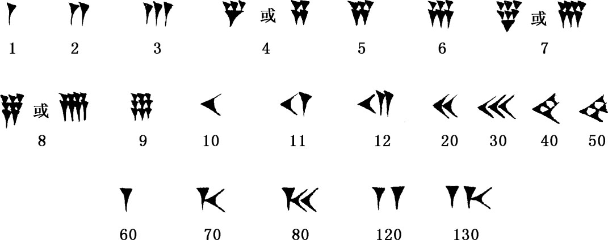
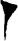
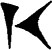

3．数的记号
我们对巴比伦文明和数学的知识，无论是其古代的或较近期的，都得自其泥版的文书。这些泥版是在胶泥尚软时刻上字然后晒干的。因而那些未被毁坏的就能完整保存下来。这些泥版的制作大抵在两段时期，有些是公元前2000年左右的，而大部分是公元前600年到公元300年间的。较早的泥版对数学史来说重要性更大些。
较早期泥版上刻的是阿卡得文字，这是附加到较早的苏美尔文字上的一种文字。阿卡得语中的字含有一个或多个音节；每个音节则用一批基本上是线条形式的记号表示。阿卡得人用一种断面呈三角形的笔斜刻泥版，在版上按不同方向刻出楔形刻痕。因此这种文字就叫楔形文字。楔形文字的英文字cuneiform就是从拉丁文cuneus而来的，而cuneus的原意就是“楔”或尖劈。
巴比伦文化中发展程度最高的算术是阿卡得人的算术。他们的整数写法如下：

巴比伦数系的突出之点是以60为基底并采用进位记号。
起初巴比伦人没有用什么记号来表示某一位上没有数，因此他们写的数是意义不定的。例如可以表示80或3620，这要取决于头一个记号是表示60还是3600。他们往往空出一些地方来表明哪一位上没有数，但这当然还会引起误解。在塞琉西时期他们引入了一种特别的分开记号来表示哪一位上没有数。例如＝1·602＋0·60＋4＝3604。但即使在这段时期也还未采用一个记号来表明最右端的一位上没有数，如同我们今日所记的20那样。在这两段时期，人们都得依靠文件的内容，才能定出整个数字的确切数值。
巴比伦人也用进位记法来表示分数。例如作为分数来记时，可以表示20/60，而作为分数来记，可表示21/60或20/60＋1/602。所以他们数字系统的混淆不清比上面所指出的还要厉害。
少数几个分数有其特定记号。例如我们可以看到＝1/2，＝1/3，＝2/3。这些特殊分数1/2，1/3和2/3，对巴比伦人来说，在量的度量意义上是作为“整体”看待的，而不是一的几分之几，虽则它们是从量的度量（同另一量相比有这相应关系）所得出的结果。例如把一角钱与元对比时，我们可以把1角钱写成1/10，但又把这1/10本身看成是一个单位。
实际上巴比伦人并不到处都用60进制。有时他们把年数写成2me25，这里me代表百，用我们的记号就是225。他们也用lîmu代表1000，这一般用在非数学的文件上，然而也出现在塞琉西时代的数学文件上。有时10和60进位是混用的。如2me1，10，这表示2×100＋1×60＋10或270。他们以60，24，12，10，6，2混合进位制写出的数，表示日期、面积、重量、钱币，正如我们今日的钟点数用12进位，分、秒数用60进位，英寸数用12进位而普通计数则用10进位一样。巴比伦人的数制也像今日所用的一样，是由许多历史条件和地区习惯形成的混合数制。不过在数学和天文上，他们则是一贯用60进制的。
我们不能明确地知道基底60是怎么来的。这也许是由于他们采用一系列重量单位制的结果。假如我们有一个重量单位制，其各单位所含重量之比为
1/2，1/3，2/3，1，10．
又假如另外还有一种重量单位制，其单位不同但重量值之比相同，而政治或社会力量要求把这两种衡制合并起来。（例如我们有米和码。）如果较大的单位是较小单位的60倍，那么较大单位的1/2，1/3和2/3将是较小单位的整倍数。因而为了使用方便就采纳较大的单位。
关于进位记数法的来源有两种可能的解释。在较早的记数法中，他们用较大的代表1乘60而以较小的这种记号代表1。在写法简化以后，

的外形减小了但仍放在代表60的那个位置上，因而所在的位置就变成代表60的倍数记号。另一种可能的解释来自币制。他们可能把1talent（古币单位）和10mana写作
，这里表示1talent，它等于60mana。正如我们所写＄1.20中的1代表100分那样。于是记钱数的写法就采用到一般算术上来了。